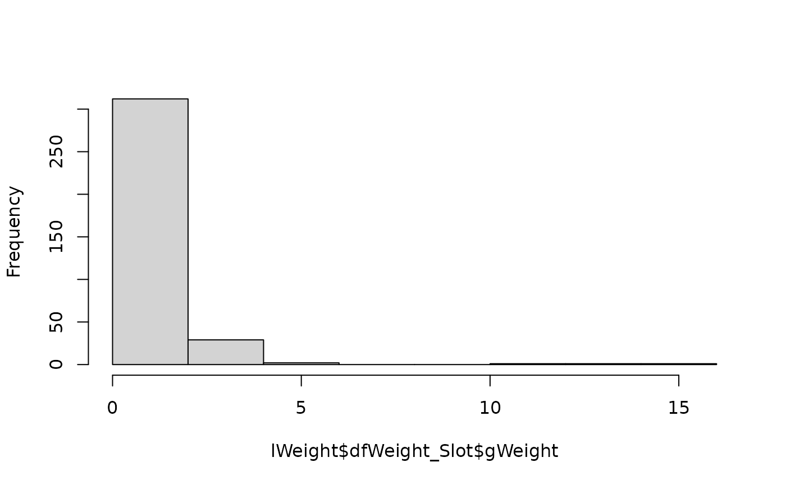

4. How to compute survey weights
Shigeru ONO
2024-03-27
vignette_weight.Rmdここでは、rSurveyAssignパッケージを使ったウェイト算出について説明します。
rSurveyAssignパッケージの背後にある考え方については、 “rSurveyAssign: tools for simulation of assignment
in web surveys”を参照して下さい。
1. 割付確率とウェイト
まず、割付バイアスを取り除くためのウェイトについて説明します。 このウェイトは、調査において広く用いられている標本ウェイトと似た概念です。 標本ウェイトについての詳細は、標本調査についての参考書、たとえば土屋「概説 標本調査法」(朝倉書店)を参照してください。
たとえば、ある製品カテゴリのたくさんのブランドについて購入意向を調べたとします。 消費者から無作為抽出した調査対象者を、なんらかの割付方法によって、 その人が知っているブランドのなかから\(J\)個までのブランドへと割り付け、 割付ブランドについて購入意向を聴取しました。
次の場合について考えます(説明のため、人数が非現実的に少なくなっています)。
- 調査対象ブランドのひとつであるブランドAについて知っている人は、調査対象者のうち10人でした。
- そのうち、ブランドAに割り付けた対象者(つまりブランドAの購入意向を聴取した対象者)は5人でした。
- 10人の対象者それぞれにAを割り付ける確率は、その対象者の他のブランドへの割付可能性に応じて変動していました。
割付確率を下表に示します。割付確率順に並べています。
| 対象者番号 | ブランドAへの割付確率 | ブランドAへの割付有無 |
|---|---|---|
| 1 | 0.05 | 割り付けられなかった |
| 2 | 0.10 | 割り付けられた |
| 3 | 0.15 | 割り付けられなかった |
| 4 | 0.20 | 割り付けられなかった |
| 5 | 0.30 | 割り付けられなかった |
| 6 | 0.40 | 割り付けられた |
| 7 | 0.50 | 割り付けられた |
| 8 | 0.60 | 割り付けられた |
| 9 | 0.80 | 割り付けられなかった |
| 10 | 0.90 | 割り付けられた |
たとえば対象者1は、ブランドAへの割付確率が非常に低く(他のたくさんのブランドを知っていたのでしょう)、 実際にAに割り付けられなかった人です。対象者2は、Aへの割付確率は低かったにも関わらず、 たまたまAに割り付けられた人です。
私たちが手に入れる調査データは、下表のA人の対象者の回答です。
| 対象者番号 | ブランドAへの割付確率 | ブランドAへの割付有無 |
|---|---|---|
| 2 | 0.10 | 割り付けられた |
| 6 | 0.40 | 割り付けられた |
| 7 | 0.50 | 割り付けられた |
| 8 | 0.60 | 割り付けられた |
| 10 | 0.90 | 割り付けられた |
これらの対象者は、ブランドAを知っていた10人に比べ、割付確率が高かった人(おそらく他のブランドをあまり知らなかった人)へと 偏っています。
この割付バイアスを集計値から取り除くためにはどうしたらよいでしょうか？
その方法のひとつが、集計の際に、割付確率が低かった人に大きな重み、高かった人に小さな重みを与えることです。
- たとえば対象者2は、割付確率が同程度に低かった人々の代表者であると考えます。割付確率は0.1だったので、 10人分の対象者を代表しているのだと考えることができます。そこで、対象者2の回答には重み10を付与します。
- 同様に、対象者10は、割付確率が同程度に高かった人々の代表者であると考えます。割付確率は0.9だったので、 1/0.9=1.11人分の対象者を代表しているのだと考えることができます。そこで、回答に重み1.11を付与します。
集計の際にはこの重みを用います。たとえば調査変数\(x\)について平均を求める際には、 回答者\(i\)の回答を\(x_i\)として、以下とします。 \[ \bar{x} = \frac{1}{10+2.5+2+1.97+1.11} (10 x_2 + 2.5 x_6 + 2 x_7 + 1.67 x_8 + 1.11 x_{10}) \] つまり、各対象者の回答を「その対象者が何人分を代表していたか」で重みづけて合計し、重みの和(代表されている人々の人数)で 割るわけです。なお、私たちはブランドXを知っていた対象者数が10であることを知っていますから、 \(10+2.5+2+1.97+1.11\)ではなくて\(10\)で割るという考え方もできます。しかし、いくつかの理由により、上の考え方のほうが良いことが わかっています(土屋(前掲書), p.78)。
この方法で、集計値から割付バイアスを取り除くことができます。 集計の際に用いる重み、すなわち割付確率の逆数のことをウェイトと呼びます。
2. データの準備
では、rSurveyAssignパッケージによるウェイト算出の手順について説明しましょう。
2.1 調査データ
まず、調査データを用意します。
調査データの例として、surveydataが用意されています。
surveydataは、本パッケージが想定している割付方法で実施された調査で得た、
架空のデータを持つデータフレームです。
この調査は、
- カテゴリ数は3
- スロット数は各カテゴリについて10
- 各対象者に対する割付カテゴリ数の上限は2
- 各対象者に対する割付スロット数の上限は2
- 目標対象者数はすべてのスロットについて10
- カテゴリ割付の方法は(adaptive, open, random, none)
- スロット割付の方法は(adaptive, all, shortnum, allclosed)
でした。調査の結果、調査対象者数は504となりました。
surveydataの内容をみてみましょう。
library(rSurveyAssign)
data(surveydata, package = "rSurveyAssign")
head(surveydata)
#> SEQ bCat_1 bCat_2 bCat_3 nAssignedCat_1 nAssignedCat_2 bSlot_1_1 bSlot_1_2
#> 1 1 1 1 1 3 2 NA NA
#> 2 2 1 1 1 3 1 0 0
#> 3 3 1 1 1 2 1 0 0
#> 4 4 1 1 1 2 1 0 1
#> 5 5 1 0 0 1 NA 0 0
#> 6 6 1 1 1 1 2 1 1
#> bSlot_1_3 bSlot_1_4 bSlot_1_5 bSlot_1_6 bSlot_1_7 bSlot_1_8 bSlot_1_9
#> 1 NA NA NA NA NA NA NA
#> 2 0 0 0 0 0 0 0
#> 3 0 0 0 0 0 0 0
#> 4 1 1 0 1 0 0 1
#> 5 0 0 0 0 1 0 0
#> 6 1 1 1 1 1 0 1
#> bSlot_1_10 bSlot_2_1 bSlot_2_2 bSlot_2_3 bSlot_2_4 bSlot_2_5 bSlot_2_6
#> 1 NA 0 0 0 0 0 0
#> 2 0 NA NA NA NA NA NA
#> 3 0 0 0 0 0 0 0
#> 4 1 0 0 1 0 1 0
#> 5 1 NA NA NA NA NA NA
#> 6 1 1 1 1 0 1 1
#> bSlot_2_7 bSlot_2_8 bSlot_2_9 bSlot_2_10 bSlot_3_1 bSlot_3_2 bSlot_3_3
#> 1 0 0 0 0 0 0 0
#> 2 NA NA NA NA 0 0 0
#> 3 0 0 0 0 NA NA NA
#> 4 1 1 0 0 NA NA NA
#> 5 NA NA NA NA NA NA NA
#> 6 0 1 1 1 NA NA NA
#> bSlot_3_4 bSlot_3_5 bSlot_3_6 bSlot_3_7 bSlot_3_8 bSlot_3_9 bSlot_3_10
#> 1 0 0 0 1 0 0 0
#> 2 0 0 0 0 0 1 1
#> 3 NA NA NA NA NA NA NA
#> 4 NA NA NA NA NA NA NA
#> 5 NA NA NA NA NA NA NA
#> 6 NA NA NA NA NA NA NA
#> nAssignedCat_Slots nAssignedSlot_1 nAssignedSlot_2
#> 1 3 7 NA
#> 2 3 9 10
#> 3 NA NA NA
#> 4 2 7 5
#> 5 1 7 10
#> 6 1 2 1行は調査対象者を表しています。i行目は、i番目に調査に参加した対象者を表しています。
- 変数
bCat_1,bCat_2,bCat_3は、カテゴリ1, 2, 3への割付可能性を表しています。- たとえば、1番目の調査対象者は、すべてのカテゴリに割付可能でした。 5番目の調査対象者は、カテゴリ1にのみ割付可能でした。
- 変数
nAssignedCat_1,nAssignedCat_2は、対象者が割り付けられたカテゴリの番号です。 列の順番には意味がありません。- たとえば、1番目の対象者はカテゴリ2, 3に割り付けられました。 5番目の対象者は、カテゴリ1に割り付けられました。
- 変数
bSlot_1_1,bSlot_1_2, …は、カテゴリ 1 のスロット 1, 2,, … への割付可能性を表しています。bSlot_2_1以降も同様です。- たとえば、5番目の調査対象者は、カテゴリ1のスロット7, 10に割付可能であることがわかっています。
- このデータ例では、対象者がカテゴリ i に割り付けられなかったとき、 カテゴリ i に属するスロットへの割付可能性はすべてNAとなっています。 たとえば、1番目の調査対象者は、カテゴリ1に対して割付可能でしたが、 カテゴリ1への割付は生じなかったため、カテゴリ1に属するスロットへの割付可能性は NAとなっています。
- 変数
nAssignedCat_Slotsは、対象者が割り付けられたスロットが属するカテゴリの番号です。 スロットへの割付が起きなかった場合はNAとなっています。- たとえば、1番目の対象者ではカテゴリ3のスロットへの割付が起きました。5番目の対象者ではカテゴリ1のスロットへの割付が起きました。
- 最後に、変数
nAssignedSlot_1,nAssignedSlot_2は、対象者が割り付けられたスロットの番号です。列の順番には意味がありません。- たとえば、1番目の対象者はカテゴリ3のスロット7へと割り付けられました。5番目の対象者はカテゴリ1のスロット7,10へと割り付けられました。
1.2 surveydataオブジェクトの生成
調査データをrSurveyAssignパッケージが扱える形式に変換します。
rSurveyAssignパッケージは、調査データを表すクラスsurveydataを用意しています。
surveydataクラスのオブジェクトは、関数makeSurveyで作成します。
makeSurveyの引数は次のとおりです。
以下では、調査対象者を\(i (=1,\ldots,I)\), カテゴリを\(j(=1,\ldots,J)\), カテゴリ\(j\)のスロットを\(k (=1,\ldots,K[j])\)、 各対象者に対する割付カテゴリ数の上限を\(C\)、 割付スロット数の上限を\(S\)とします。
-
mbCAT: カテゴリ割付可能性。- \(I\)行\(J\)列の整数行列。
- \(i\)行\(j\)列の値は、「\(i\)番目に調査に参加した対象者にとってカテゴリ\(j\)は割付可能であったか」を表し、\(0\)は割付不能, \(1\)は割付不能を表します。
- 欠損は許容されません。
-
lSLOT: スロット割付可能性。- \(J\)個の要素からなるリスト。\(j\)番目の要素は、\(I\)行\(K[j]\)列の整数行列。
- 要素\(j\)の行列の\(i\)行\(k\)列の値は、「\(i\)番目に調査に参加した対象者にとって カテゴリ\(j\)のスロット\(k\)は割付可能であったか」を表し、\(0\)は割付不能, \(1\)は割付不能を表します。
-
mbCAT[i,j] == 0のとき、lSLOT[[j]][i,]は無視されます (すなわち、割付不能カテゴリに属するスロットの割付可能性は無視されます)。 従って欠損も許容されます。 -
mbCAT[i,j] == 1であり、かつmnASSIGNEDCAT[i,]に\(j\)が含まれているとき、lSLOT[[j]][i,]に欠損は許容されません (すなわち、割り付けされたカテゴリに属するスロットへの割付可能性は すべて指定する必要があります)。 -
mbCAT[i,j] == 1であり、かつmnASSIGNEDCAT[i,]に\(j\)が含まれていないとき、lSLOT[[j]][i,]は無視されませんが、欠損も許容されます (すなわち、割付可能カテゴリであれば、割り付けされなかったカテゴリであっても、 そのカテゴリに属するスロットへの割付可能性は、 利用できる限り、シミュレーションに利用されます)。 欠損を含んでいる行は、その行全体が欠損であるとみなされます。
-
lSETTING: 割付のセッティング。 -
mnASSIGNCAT: 割付カテゴリ。- \(I\)行\(C\)列の整数行列。
-
\(i\)行目は、調査対象者\(i\)が割り付けられた0個～C個のカテゴリの番号(
mbCATの列番号)を表します。 - 調査対象者\(i\)にカテゴリ割付が行われなかったときは、\(i\)行目はすべてNAとします。割り付けられたカテゴリが\(C\)個未満であった場合は、それらのカテゴリ番号を格納し、残りはNAとします。
- ある行のなかの値の順序に意味はありません。
-
anPARENTCAT: 割付スロットが属するカテゴリ。- 長さ\(I\)の整数行列。
-
\(i\)番目の要素は、調査対象者\(i\)が割り付けられたスロットが属するカテゴリの番号(
mbCATの列番号)を表します。スロット割付が行われなかった場合はNAとします。
-
mnASSIGNSLOT: 割付スロット。- \(I\)行\(S\)列の整数行列。
-
\(i\)行目は、調査対象者\(i\)が割り付けられたスロットの番号を表します。
ここでスロットの番号とは、
agPARENTCAT[1]で指定されているカテゴリをcとして、lSLOT[[c]]の列番号のことです。 - 調査対象者\(i\)にスロット割付が行われなかったときは\(i\)行目はすべて欠損とします。割り付けられたスロットが\(S\)個未満であった場合は、それらのスロット番号を格納し、残りは欠損とします。
- ある行のなかの値の順序に意味はありません。
関数makeSurveyは、これらのオブジェクトの整合性をチェックしたうえで、
リストに格納して返します。
では、データ例をsurveydataクラスのオブジェクトに変換しましょう。
lSetting <- makeSetting(
lSLOT_REQUEST = list(rep(10, 10), rep(10, 10), rep(10, 10)),
nCAT_MAX = 2,
sCAT_TYPE = 'adaptive',
sCAT_FILTER = "open",
sCAT_ORDER = "random",
sCAT_EXCLUDE = "none",
nSLOT_MAX = 2,
sSLOT_TYPE = "adaptive",
sSLOT_FILTER = "all",
sSLOT_ORDER = "shortnum",
sSLOT_EXCLUDE = "allclosed"
)
#> [makeSetting] assign names to lSLOT_REQUEST ...
lSurvey <- makeSurvey(
mbCAT <- as.matrix(surveydata[, paste0("bCat_", 1:3)]),
lSLOT <- list(
as.matrix(surveydata[, paste0("bSlot_1_", 1:10)]),
as.matrix(surveydata[, paste0("bSlot_2_", 1:10)]),
as.matrix(surveydata[, paste0("bSlot_3_", 1:10)])
),
lSETTING = lSetting,
mnASSIGNCAT = as.matrix(surveydata[, c("nAssignedCat_1", "nAssignedCat_2")]),
anPARENTCAT = as.vector(surveydata$nAssignedCat_Slots),
mnASSIGNSLOT = as.matrix(surveydata[, c("nAssignedSlot_1", "nAssignedSlot_2")])
)
#> [makeSurvey] # of categories: 3
#> [makeSurvey] # of slots: 10,10,10
#> [makeSurvey] # subjects: 504
#> [makeSurvey] # of pairs of subject-category:
#> [makeSurvey] total: 1512
#> [makeSurvey] assignable: 1337 (445.7/category)
#> [makeSurvey] assigned: 1767 (589.0/category)
#> [makeSurvey] assignable but assignabilities to slots are unknown: 447 (149.0/category)
#> [makeSurvey] each of these subjects will be complemented by:
#> [makeSurvey] a subject who has the same pattern of assignable categories: 447
#> [makeSurvey] a subject who has the same number of assignable categories: 0
#> [makeSurvey] a subject who is randomly selected: 0
#> [makeSurvey] # of pairs of subject-slot:
#> [makeSurvey] in assignable categories: 13370 (445.7/slot)
#> [makeSurvey] known to be assignable: 1829 (61.0/slot)
#> [makeSurvey] assigned: 346 (11.5/slot)無事に変換されました。
1.2 割付のチェック
話を進める前に、調査データにおいてカテゴリ割付・スロット割付が 期待通りに行われていたかどうかをチェックしておきましょう。
dfCheck <- checkSurvey(lSurvey)
#> [checkSurvey] 0 errors are found.この例では、すべての対象者について、カテゴリ割付・スロット割付が期待通りに行われていました。
期待通りに行われていない対象者がいた場合、その詳細が、checkAssignが返すデータフレームに記述されます。
実際のweb調査においても、システムのトラブルや、対象者を割り付けるタイミングが複数の対象者で重なってしまうといった理由により、必ずしもすべての割付が期待通りに行われるとは限らないと思います。従って、期待に反する割付が行われた人がある程度生じるのは仕方がないと思います。
しかし、期待に反する割付が行われた人数が多すぎるときには、以下で算出するウェイトの妥当性も疑われます。実査システムをチェックする必要があるでしょう。
3. 再割付シミュレーション
ウェイトを算出するためにシミュレーションを行ってみましょう。
rSurveyAssignパッケージでは、割付確率を推定するために、調査データから調査対象者を復元抽出することによって仮想的な調査対象者を生成し、カテゴリ・スロットへの割付をやりなおします。これを再割付試行と呼びます。
再割付試行を十分な回数繰り返し、ある対象者があるカテゴリ・スロットへと割り付けられる割合を求め、これを割付確率の推定値とします。
3.1 少数の試行の実行
まずは、シミュレーションを10試行だけ実行してみます。引数nBLOCKSIZEにブロックあたり試行数10を指定し、引数nNUMBLOCKにブロック数1を指定します。
set.seed(123) # 結果を再現するために乱数のシードを設定している。通常は設定不要
lResult <- simWeight(
lSURVEY = lSurvey,
nBLOCKSIZE = 10,
nNUMBLOCK = 1
)
#> [makeRetrialBlock] start replication (serial) ...
#> [makeRetrialBlock] retrial: 1 ; rand: 0.2875775 ; extract: 703 ; 0.059 sec.
#> [makeRetrialBlock] retrial: 2 ; rand: 0.8474248 ; extract: 465 ; 0.039 sec.
#> [makeRetrialBlock] retrial: 3 ; rand: 0.4102877 ; extract: 463 ; 0.039 sec.
#> [makeRetrialBlock] retrial: 4 ; rand: 0.8728468 ; extract: 541 ; 0.042 sec.
#> [makeRetrialBlock] retrial: 5 ; rand: 0.7231241 ; extract: 561 ; 0.044 sec.
#> [makeRetrialBlock] retrial: 6 ; rand: 0.5164188 ; extract: 563 ; 0.04 sec.
#> [makeRetrialBlock] retrial: 7 ; rand: 0.2947217 ; extract: 587 ; 0.051 sec.
#> [makeRetrialBlock] retrial: 8 ; rand: 0.5854465 ; extract: 540 ; 0.044 sec.
#> [makeRetrialBlock] retrial: 9 ; rand: 0.6935848 ; extract: 378 ; 0.035 sec.
#> [makeRetrialBlock] retrial: 10 ; rand: 0.3121077 ; extract: 525 ; 0.041 sec.
#> [execRetrials] block 1 : 0.55 sec.画面に表示されたメッセージをみてみましょう。上から2行目以降のメッセージは再割付試行について表示しています。最初の再割付試行では、調査対象者を690人抽出したところで、目標対象者数が満たされ、調査が終了しました。
シミュレーションの結果をみてみましょう。
simWeightの返し値は2つの要素からなるリストです。
要素dfStat_Catは、試行を通じ、ある対象者があるカテゴリに何回割り付けられたかを示しています。
head(lResult$dfStat_Cat)
#> # A tibble: 6 × 7
#> nSubject nCat bAssign nCount_SubjectCat nCount_Subject nBlock nBlockSize
#> <int> <int> <dbl> <int> <int> <int> <dbl>
#> 1 1 1 0 5 9 1 10
#> 2 1 2 1 8 9 1 10
#> 3 1 3 1 4 9 1 10
#> 4 2 1 1 4 6 1 10
#> 5 2 2 0 5 6 1 10
#> 6 2 3 1 3 6 1 10最初の行は、10回のシミュレーション試行中に、対象者1が(正確には、対象者1と全く同一の割付可能性を持つ誰かが)、延べ9回にわたり調査に参加し、そのうち5回においてカテゴリ1に割り付けられた、ということを示しています。シミュレーションを繰り返せば、対象者1がカテゴリ1に割り付けられる確率を推定することができます。
要素dfStat_Slotは、試行を通じ、ある対象者があるスロットに何回割り付けられたかを示しています。
head(lResult$dfStat_Slot)
#> # A tibble: 6 × 8
#> nSubject nCat nSlot bAssign nCount_SubjectSlot nCount_Subject nBlock
#> <int> <int> <int> <dbl> <int> <int> <int>
#> 1 4 1 2 0 3 14 1
#> 2 4 1 3 0 0 14 1
#> 3 4 1 4 0 0 14 1
#> 4 4 1 6 0 2 14 1
#> 5 4 1 9 0 1 14 1
#> 6 4 1 10 0 0 14 1
#> # ℹ 1 more variable: nBlockSize <dbl>最初の行は、10回のシミュレーション試行中に、対象者1が(正確には、対象者1と全く同一の割付可能性を持つ誰かが)、延べ14回にわたり調査参加し、そのうち3回においてカテゴリ1のスロット2に割り付けられた、ということを示しています。 シミュレーション試行を繰り返せば、対象者1がカテゴリ1のスロット2に割り付けられる確率を推定することができます。
3.2 少数の試行の実行と保存
上の例では、シミュレーションの結果をデータフレームとして取得しました。 しかし、シミュレーションの結果はサイズが大きいので、いったんSQLiteデータベース上に 保存したほうがよいでしょう。
以下の例では、
SQLiteデータベースファイルとして、../tools/rSurveyAssign_vignette_weight_1.sqliteを
作成します。実際には、適切なフォルダとファイル名を指定してください。また、
データベースファイルは必要がなくなったら自分で消してください。
### 都合によりコメントアウトしています
# set.seed(123) # 結果を再現するために乱数のシードを設定している。通常は設定不要
# lResult <- simWeight(
# lSURVEY = lSurvey,
# nBLOCKSIZE = 10,
# nNUMBLOCK = 1,
# sDBPATH = "../tools/rSurveyAssign_vignette_weight_1.sqlite",
# bPARALLEL = FALSE,
# bAPPEND = FALSE # すでにデータベースが存在する場合は上書きする
# )3.3 多くの試行の実行
ウェイトを求めるためには、再割付試行を十分な回数だけ繰り返す必要があります。 今度は1000試行繰り返してみましょう。
上の例では10試行からなる1ブロックを実行してきましたが、
デフォルトでは、100試行を1ブロックと呼んでいます。
ここでは、引数nBLOCKSIZEを指定せず、
引数nNUMBLOCKにブロック数10を指定します。
実行時間を短くするため、並列処理を行うことにします。引数bPARALLELにTRUEを指定します。
並列処理を行う場合、各試行についてのメッセージは画面に表示されません。 そこでログファイルを作成することにします。 実行に長い時間がかかる場合は、ログファイルを監視すると、 いま何試行まで進んでいるかわかり、少しだけ心が癒されるでしょう。
下の例では、ログファイルをC:/work/simWeight.logとしています。
RStudioを使っているなら、Terminalウィンドウでtail -F C:/work/simWeight.logを
実行すると、ログファイルを監視できます。
### 都合によりコメントアウトしています
# set.seed(123) # 結果を再現するために乱数のシードを設定している。通常は設定不要
# lResult <- simWeight(
# lSURVEY = lSurvey,
# nNUMBLOCK = 10,
# sDBPATH = "../tools/rSurveyAssign_vignette_weight_2.sqlite",
# bPARALLEL = TRUE,
# sLOGFILE = "c:/work/simWeight.log",
# bAPPEND = FALSE # すでにデータベースが存在する場合は上書きする
# )データベースに1000試行の結果が格納されました。
なお、これまでにデータベースに格納した試行数は、格納した際に表示されますが、
関数countWeightで調べることもできます。
countWeight(sTYPE = "retrial", sDBPATH = "../tools/rSurveyAssign_vignette_weight_2.sqlite")
#> [1] 1000上記の実行例では、シミュレーションの結果をデータベースに上書きしましたが、
引数bAPPENDをTRUEにすることで、データベースに追加することもできます。
この例では1ブロックに数秒しかかかりませんが、
場合によってはもっと長い時間がかかることがあります。ブロック数を大きくすると、
simWeightの実行にはとても長い時間がかかってしまうことになります。
大きなブロック数を一気に実行するのではなく、
ブロック数は手頃な大きさにしておき、気が向いたときに
simWeightを繰り返し実行して、
結果を少しずつデータベースに蓄積していくのが良いでしょう。
その際は、初回実行時には引数bAPPENDをFALSEとし、
二回目以降の実行時にはTRUEとしてください。
また、引数lSURVEYに与える値を途中で変えないように注意して下さい(少しでも変えるとエラーになります)。
4. ウェイトの算出
十分な回数の再割付試行を行えば、それらの結果から、ある人があるカテゴリ・スロットに割り付けられる確率を推定し、ウェイトを求めることができます。
シミュレーション試行の結果に基づきウェイトを算出するためには、関数getWeightを使います。
lWeight <- getWeight(lSurvey, "../tools/rSurveyAssign_vignette_weight_2.sqlite")getWeightの返し値は2つのデータフレームを含むリストです。
データフレーム
dfWeight_Catには、ある調査対象者のある割付カテゴリに対する回答に与えるウェイトが
格納されています。
head(lWeight$dfWeight_Cat)
#> # A tibble: 6 × 7
#> nSubject nCat nNumRetrial nCount_SubjectCat nCount_Subject gProb gWeight
#> <int> <int> <dbl> <int> <int> <dbl> <dbl>
#> 1 1 3 1000 614 1004 0.612 1.06
#> 2 1 2 1000 646 1004 0.644 1.01
#> 3 2 3 1000 591 997 0.593 1.10
#> 4 2 1 1000 583 997 0.585 1.11
#> 5 3 2 1000 679 1024 0.663 0.979
#> 6 3 1 1000 583 1024 0.570 1.14対象者1の割付カテゴリ3への回答には、ウェイト1.06が付与されています。 なお、このウェイトは、すべての調査対象者のすべての割付カテゴリを通じて 平均1に規準化されています。ヒストグラムを描いてみましょう。
hist(lWeight$dfWeight_Cat$gWeight, main = NULL)
割付カテゴリに対するウェイトは、それほど極端な値にはなっていないようです。
データフレーム
dfWeight_Slotには、ある調査対象者のある割付スロットに対する回答に与えるウェイト
が格納されています。
head(lWeight$dfWeight_Slot)
#> # A tibble: 6 × 8
#> nSubject nCat nSlot nNumRetrial nCount_SubjectSlot nCount_Subject gProb
#> <int> <int> <int> <dbl> <int> <int> <dbl>
#> 1 1 3 7 1000 225 1004 0.225
#> 2 2 3 9 1000 271 997 0.273
#> 3 2 3 10 1000 271 997 0.273
#> 4 4 2 7 1000 423 1003 0.422
#> 5 4 2 5 1000 134 1003 0.134
#> 6 5 1 7 1000 533 1011 0.528
#> # ℹ 1 more variable: gWeight <dbl>対象者1が割り付けられたカテゴリ3のスロット7への回答には、ウェイト0.57が 付与されています。 なお、このウェイトは、すべての調査対象者のすべての割付スロットを通じて、 平均1に規準化されています。ヒストグラムを描いてみましょう。
hist(lWeight$dfWeight_Slot$gWeight, main = NULL)ごくわずかですが、極端に大きいウェイトが含まれているようです。
ウェイトが極端になったときは、まずシミュレーションの試行数が不十分である ことを疑ってください。
十分な試行数の結果に基づいて算出してもなお極端なウェイトが出現する場合は、バイアスが強すぎる割付方法を選択してしまったことが疑われます。バイアスの完全な除去を断念し、ウェイトを適切な範囲に切り詰めることを検討してください。
ウェイトを切り詰めるための関数としてtrimWeightが用意されています。デフォルトでは、
ウェイトを0.2から5の範囲に切り詰めます。
hist(trimWeight(lWeight$dfWeight_Slot$gWeight), main = NULL)